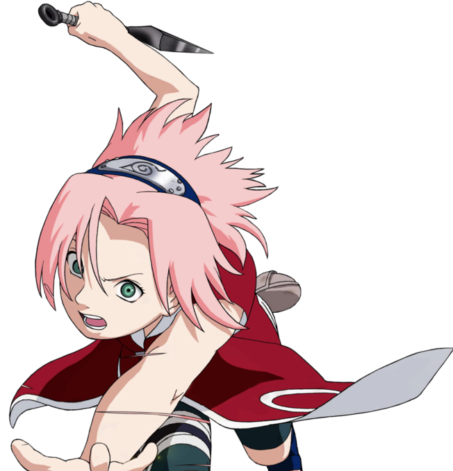

Сакура Учиха (яп. うちはサクラ, Учиха Сакура, урождённая Харуно (яп. 春野) — куноичи из Скрытого Листа. Став частью Команды 7, Сакура быстро осознаёт свою неподготовленность к суровой жизни шиноби. Тем не менее, после прохождения тренировок под руководством Саннина Цунаде, она преодолевает это и становится одним из величайших ниндзя-медиков в мире. Превзойдя Цунаде становится также самой могущественной куноичи своего времени.